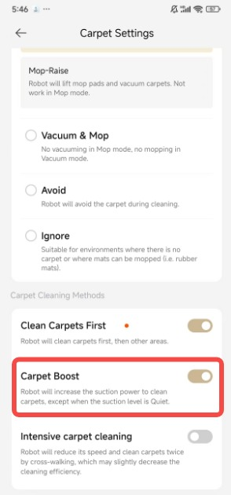

DREAME 扫地机器人开箱上手：从配网失败到地毯自动增压，一套教程把它用明白
刚入手 DREAME 的新手最容易在配网、地图分区、地毯增压这三件事上卡住。这篇手把手带你走完从开箱到稳定清扫的完整流程，附三个高频卡点的解法。
看完这篇教程，你能完成 DREAME 扫地机器人的配网、地图分区命名、地毯增压开启三个核心操作，机器能按你定义的房间顺序自动清扫，上地毯时自动加大吸力。
准备：你需要的东西
- 一台 DREAME 扫地机器人（L20 / L30 / X30 / X40 系列通用，完整型号列表见官网）
- 一台智能手机，iOS 或 Android 都行
- 家里的 WiFi 名称和密码，必须是 2.4GHz 频段（配网阶段只认单频 2.4G，双频合一的路由器先临时关掉 5G）
- 手机应用商店搜 DREAME 装官方应用，或者直接走下载通道
前置条件就这几条。应用装完、手机连到 2.4G WiFi、机器人充好电（底部开关拨到 ON，充电座蓝灯常亮），就可以开始。
第一步：把机器连上你家的 WiFi
配网是第一道关，也是翻车率最高的一步。别急着按应用里的"添加设备"就完事——先做两件事：确认手机在 2.4G 上，确认机器能进配网模式。
- 打开应用，注册登录。首次登录会让你选国家地区，选对了，应用的服务器节点才跟机器匹配。
- 机器人底部拨到 ON，等它开机完成（听到"开机"语音提示）。按住机器上的充电键五到六秒，听到"正在等待配网"松手——这时机器进入配网模式，指示灯开始闪。
- 回到应用，点"添加设备"，应用会自动搜索附近处于配网状态的 DREAME 机器。搜到后点它，应用让你填你家 WiFi 的名称和密码。
- 填完密码，应用开始把 WiFi 信息推给机器。这一步别切应用、别锁屏——推送过程大约三十秒。
- 成功后应用会自动跳到设备主页，你能看到一张空白地图和机器人图标。
第二步：建地图并给房间起好名字
机器配网成功后，第一次启动清扫就会自动建图。但默认建出来的地图分区是"房间一、房间二、房间三"，一周后你自己都分不清哪个是哪个。现在就把名字改掉，后面的预约、清扫顺序、语音控制全靠这些名字。
- 在设备主页点"开始清扫"，让机器先完整扫一遍家。这可能需要十几分钟，机器绕着屋子跑一圈，应用上的实时地图会一点点填起来。
- 清扫完成后机器自动回充，地图保存。现在进地图编辑——应用的设备主页上一般有个地图缩略图，点它就进编辑模式。
- 进入地图编辑后，先看地图上有没有被自动分区。DREAME 的自动分区能识别出大部分房间，但有时候会把客厅和阳台合在一起，或者厨房切得不对。
- 逐个点进房间，把默认名称改成：客厅、主卧、次卧、书房、厨房、阳台——就用最朴素的叫法。命名时别用生僻字、别加表情，语音控制时机器要念出来的。
- 多楼层的房子，进"多楼层地图管理"，每层一张地图，统一命名成"一楼""二楼"这种，切换时不至于拿错。
这里有个权限提醒：房间重命名只有主账号能操作。如果你把机器共享给了家人，他们的账号进来只能看不能改——这是官方设计，不是 bug。
第三步：打开地毯增压，让机器人上地毯自动加劲
如果你家铺了地毯，这一步必须做。恒定吸力扫地毯总是差一口气，地毯藏灰纳屑的能力远高于硬质地板。地毯增压开启后，机器人识别到自己爬上地毯会自动把吸力提到更高档位，下毯后恢复原档——不花额外操作，地毯清洁效果肉眼可见地变好。
三步开启：
- 设备主页点左上角三个点，进入设置页。
- 设置列表里找到 Carpet Settings（地毯设置），点进去。
- 找到 Carpet Boost（地毯增压）开关，打开。

这里有个关键前提你必须知道：吸力档位设在安静（Quiet）档时，地毯增压不生效。逻辑很简单——安静档的目的就是压低噪音，如果上毯自动增压，噪音管理就失效了。实际使用时：白天有人在家、不介意噪音，用标准档起步，增压正常触发，地毯扫得最干净；深夜定时清扫用安静档，增压不触发，地毯只是"扫过"而非"扫净"，深度清扫留给白天手动发起的任务。
另外，增压触发依赖机器人的地毯识别。如果你已经在地图里把地毯区域标注过（地毯材质标记），增压触发最稳。没有标注的话，部分机型的实时识别也能触发，但不如标注后的联动可靠。两分钟进地图编辑把地毯标一下，值得。
常见卡点与解法
卡点一：配网反复失败，连不上
按上面的步骤走，机器还是连不上 WiFi？翻了DREAME文档才学到这个热点交叉验证法，一次实验就能把责任方定位清楚：
- 找第二台手机开个人热点，热点名称设成纯英文加数字，密码简单干净（比如 Test1234）。
- 原来配网的那台手机，WiFi 切换到这个热点上。
- 重新走配网流程，WiFi 信息填这个热点。
- 看结果：热点能配上——说明机器和手机都没问题，问题在你家路由器侧（MAC 过滤、双频没分开、信号太弱）；热点也配不上——大概率是机器本身的问题，换另一台手机再试一次排除机型兼容性，还不行就联系售后。
卡点二：地图分区不准，客厅和阳台粘在一起
自动分区不完美是正常的，手动调整就行。进地图编辑，找到房间分区工具，把粘在一起的区域切开，分别命名。分区边界尽量按实际物理空间的墙来切，不要斜着切一块三角形区域——清扫顺序设置时，系统按房间为单位分配任务，边界歪了会导致清扫路径绕路或漏扫。
卡点三：地毯增压开关打开了但感觉没生效
先看吸力档位是不是设在安静档——安静档增压不触发是官方行为，不是坏了。如果档位没问题，检查地图里地毯区域有没有标注：标注过的地毯触发最稳，没标注的实时识别有时候会漏。两分钟进地图编辑把地毯标上就行。
进阶：往下还能玩什么
基础操作跑通之后，可以继续折腾预约清扫（让机器每天定时自动跑）、自定义清扫顺序（书房先扫、客厅后扫）、远程监控（人在外面打开应用就能盯机器人进度）。这些都是在你已经完成配网、地图、地毯设置的基础上往上叠的——地基打好了，往上建什么都快。
DREAME 的这套资料日常更新维护主要放在GitHub上，国内网络访问更顺畅的场景可以直接看Gitee或GitCode的镜像副本。